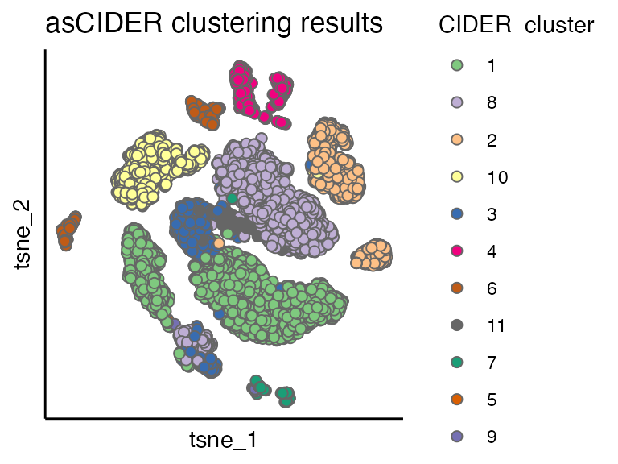
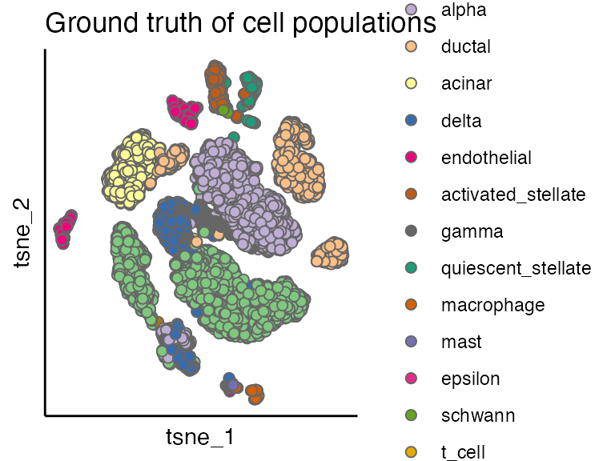

vignettes/dnCIDER_highlevel.Rmd
dnCIDER_highlevel.RmdPancreatic cell data\(^1\) contain cells from human (8241 cells) and mouse (1886 cells).
data("pancreas_counts") # count matrix
data("pancreas_meta") # meta data/cell information
seu <- CreateSeuratObject(counts = pancreas_counts, meta.data = pancreas_meta)
table(seu$Batch)
#>
#> human mouse
#> 8241 1886DnCIDER contains three steps
seu <- initialClustering(seu, additional.vars.to.regress = "Sample", dims = 1:15)
#>
|
| | 0%
|
|=================================== | 50%
|
|======================================================================| 100%
ider <- getIDEr(seu, downsampling.size = 35, use.parallel = FALSE, verbose = FALSE)
seu <- finalClustering(seu, ider, cutree.h = 0.35) # final clusteringWe use the Seurat pipeline to perform normalisation (NormalizeData), preprocessing (FindVariableFeatures and ScaleData) and dimension reduction (RunPCA and RunTSNE).
seu <- NormalizeData(seu, verbose = FALSE)
seu <- FindVariableFeatures(seu, selection.method = "vst", nfeatures = 2000, verbose = FALSE)
seu <- ScaleData(seu, verbose = FALSE)
seu <- RunPCA(seu, npcs = 20, verbose = FALSE)
seu <- RunTSNE(seu, reduction = "pca", dims = 1:12)We can see
scatterPlot(seu, "tsne", colour.by = "CIDER_cluster", title = "asCIDER clustering results") 
By comparing the dnCIDER results to the cell annotation from the publication\(^1\), we observe that dnCIDER correctly identify the majority of populations across two species.
scatterPlot(seu, "tsne", colour.by = "Group", title = "Ground truth of cell populations") 